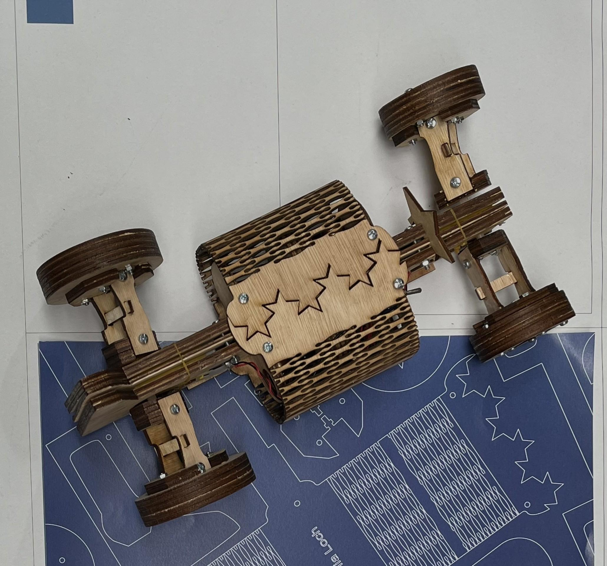
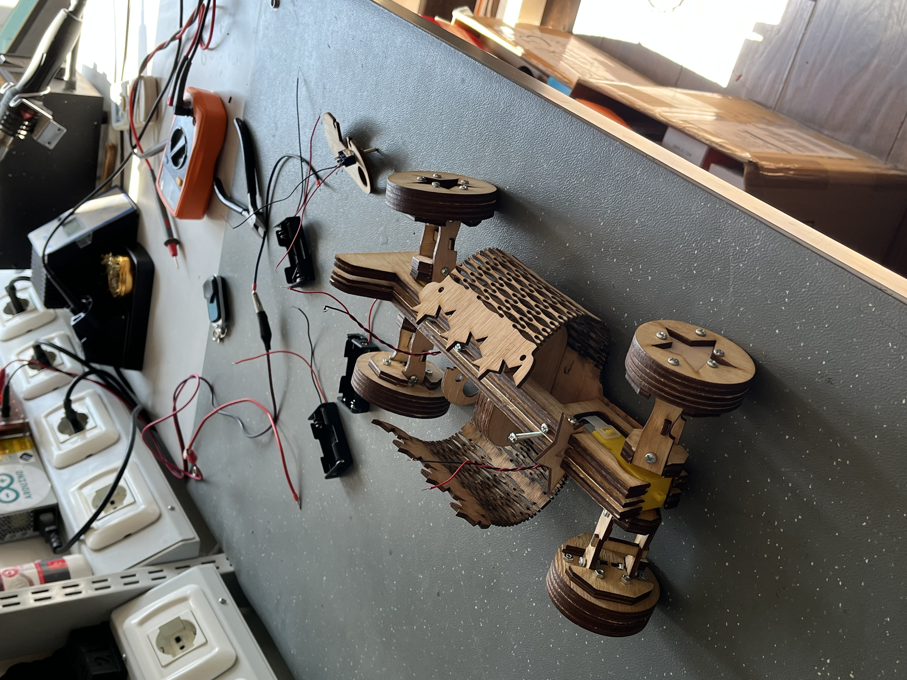
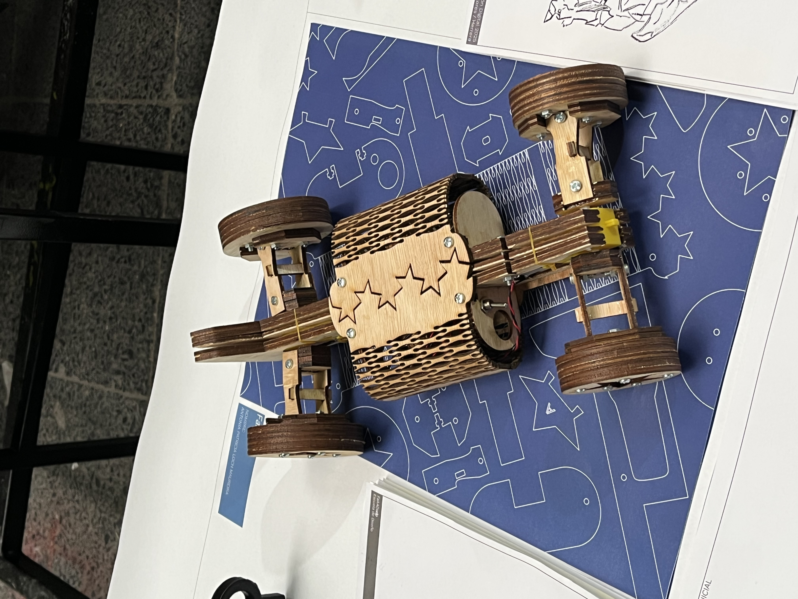

08 / 08
Auto
El proyecto consistió en el diseño y construcción de un vehículo motorizado a pequeña escala. Su desarrollo comenzó con el modelado tridimensional de cada uno de sus componentes en Rhinoceros (Rhino), diseñando pieza por pieza la estructura, el chasis y los elementos que conforman el sistema de ruedas. El diseño consideró las dimensiones y uniones necesarias para permitir el posterior ensamblaje del vehículo.
A partir del modelo digital, las piezas fueron fabricadas mediante corte de terciado de 3 mm de espesor. Posteriormente, se realizó el ensamblaje de los componentes utilizando pernos, tornillos y elementos de fijación, dando forma a una estructura modular que integra el chasis con los ejes y las ruedas. Este proceso permitió materializar el diseño y comprobar el funcionamiento de las uniones y proporciones del conjunto.
Finalmente, se incorporó un sistema de motorización eléctrica alimentado por una batería, conectado a un motor encargado de generar el movimiento de las ruedas. El proyecto integra modelado 3D, fabricación digital, ensamblaje y experimentación mecánica y eléctrica, abarcando el proceso completo desde el diseño de las piezas hasta la construcción de un prototipo funcional.


